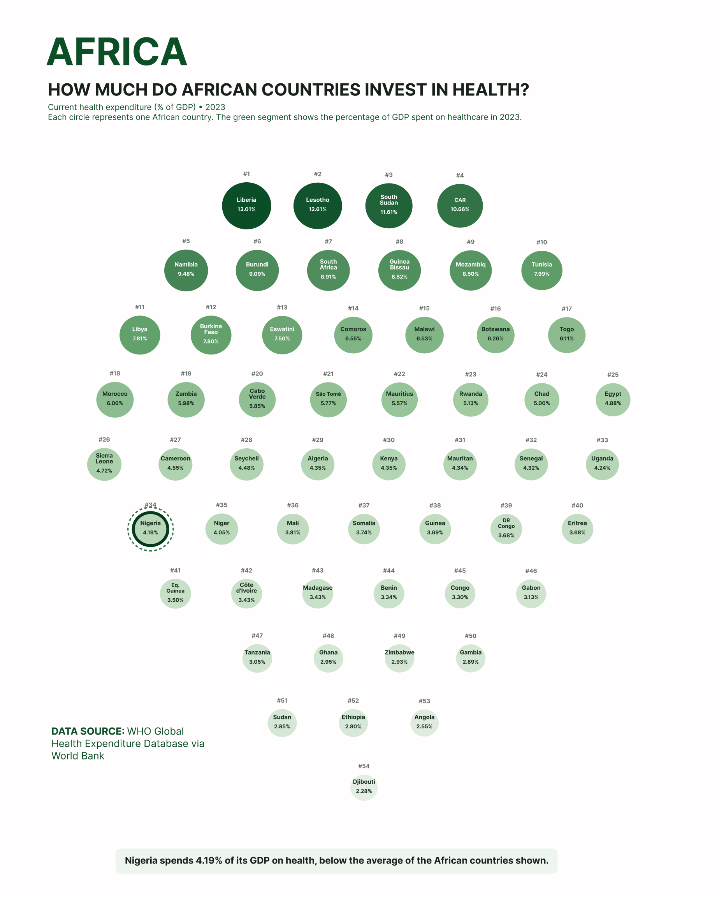
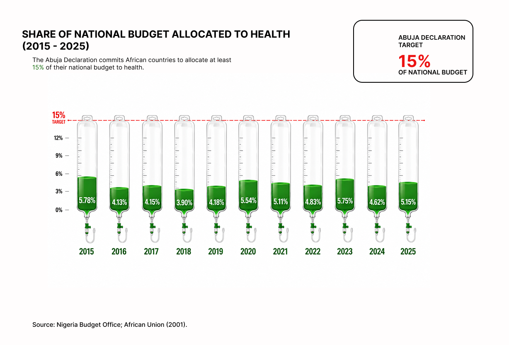
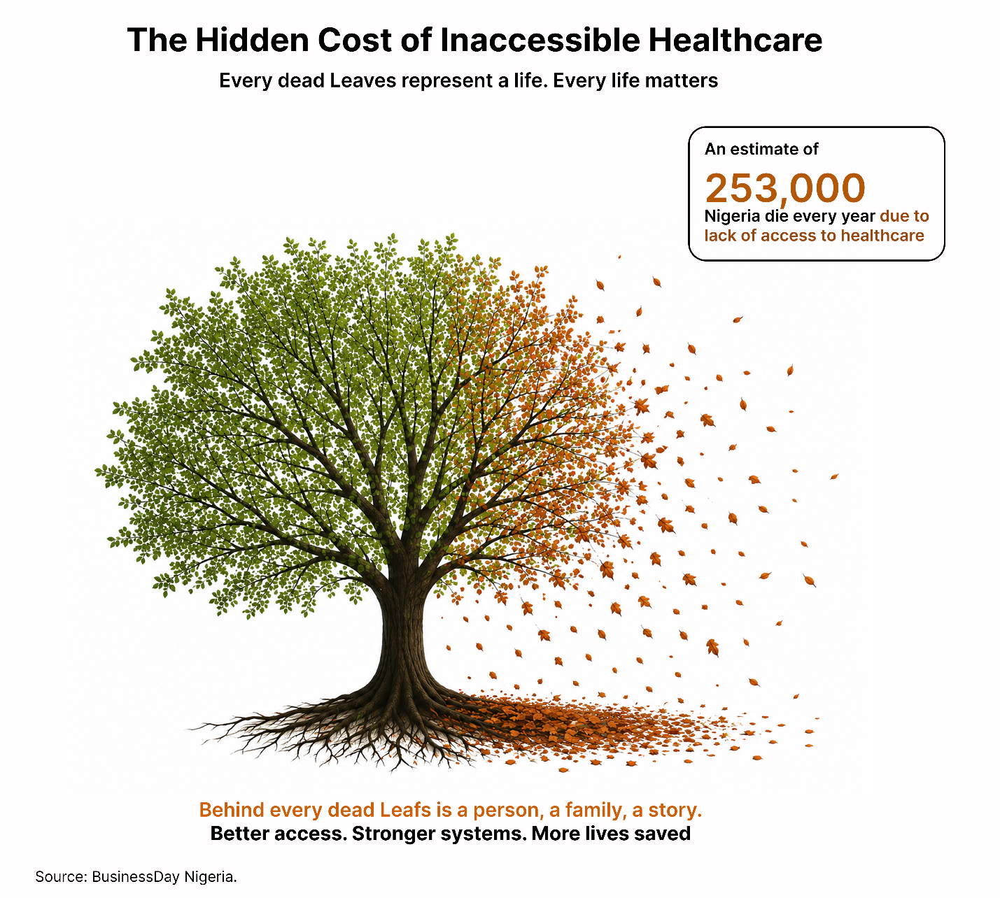
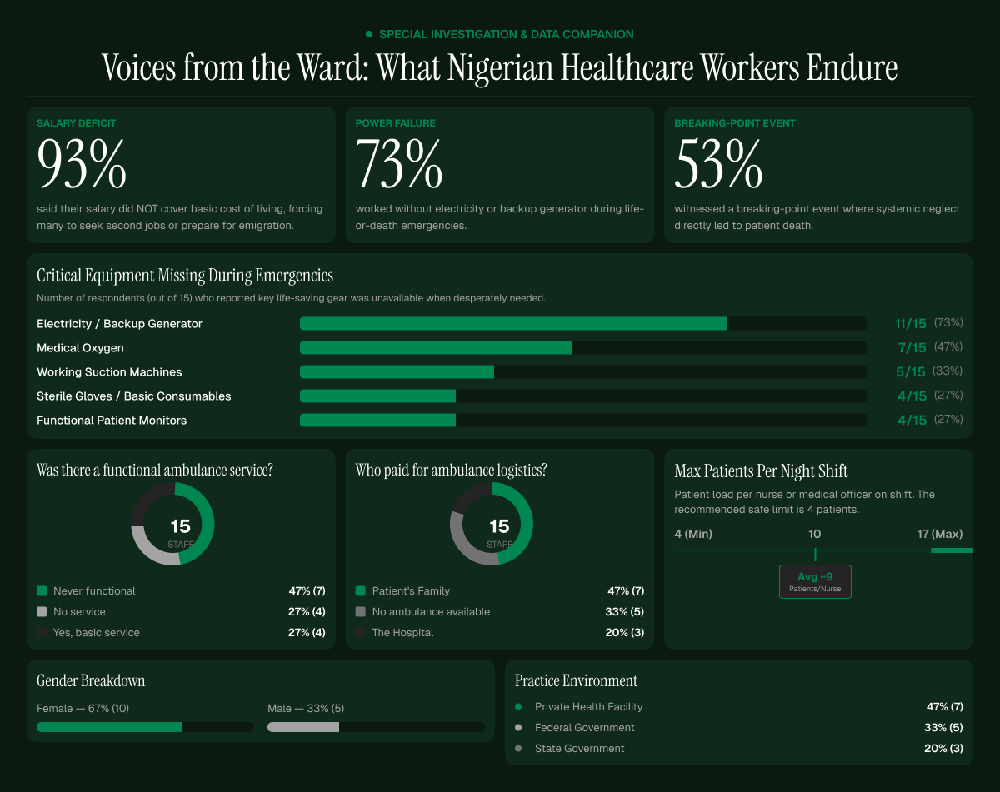

Invest
Strengthen and sustain healthcare investment
Continue increasing health investment and work towards the Abuja Declaration commitment, while ensuring funding responds to priority healthcare needs.
A data story · Nigeria's healthcare system
Every percentage point in a health budget is a person waiting somewhere for care. This is what the numbers and the people behind them say about Nigeria's healthcare system.
Introduction
Nigeria is Africa's most populous country, with more than 200 million people relying on a healthcare system already under considerable pressure (World Bank, 2026). Behind that scale are millions of individual experiences — people seeking treatment, families trying to afford care, and healthcare professionals working within limited resources. Nigeria continues to face challenges relating to healthcare financing, workforce capacity, infrastructure and access to essential services (WHO/AHOP, 2025).
But the healthcare crisis is not only about hospitals or doctors. It is also about whether people can afford to seek help when they need it. Out-of-pocket spending accounts for more than 75% of total health expenditure in Nigeria, placing a substantial financial burden directly on individuals and families (WHO/AHOP, 2025).
01 — Continental context
Understanding Nigeria's healthcare system requires more than looking at the country in isolation. Comparing health expenditure across African countries provides a wider context for understanding how much of each country's economic resources are directed towards healthcare.
One useful measure is Current Health Expenditure (CHE) as a percentage of GDP — the value of healthcare goods and services consumed within a year relative to the size of a country's economy (WHO, 2026). For this project, 54 African countries were compared using 2023 data from the WHO Global Health Expenditure Database, also published through the World Bank.

Nigeria spends 4.19% of its GDP on health — ranked 34th of 54 African countries shown, below the group average.
Source: WHO Global Health Expenditure Database, via World Bank.
At 4.19%, Nigeria sits in the lower half of the countries shown. However, this figure should not be interpreted as government health spending alone current health expenditure includes healthcare spending from government, households and other financing sources, measured relative to the size of the economy (WHO, 2026).
02 - A promise made in Abuja
In 2001, African Union member states met in Abuja, Nigeria, and committed to allocating at least 15% of their annual national budgets to the health sector. The Abuja Declaration created a benchmark for assessing the priority governments place on healthcare within national spending (African Union, 2001). Nigeria has repeatedly remained below this target.
Looking specifically at 2015–2025, Nigeria's federal health allocation has consistently remained well below the 15% benchmark. Although the naira amount allocated to healthcare has grown substantially as the national budget has grown, the proportion of the overall budget devoted to health has remained relatively low.

Source: Nigeria Budget Office; African Union (2001).
From 2015 onwards, the percentage allocated to health fluctuated year to year, but the overall pattern remained clear: Nigeria did not reach the Abuja Declaration's 15% benchmark during the period examined. Even the 2025 budget continued this pattern. More money is being allocated to healthcare — but the question remains: is healthcare receiving enough priority within the national budget?
03 — When the gap becomes human
Budgets and percentages can feel distant, but behind healthcare funding are people whose lives depend on being able to access appropriate care when they need it. Research from the Lancet Global Health Commission on High Quality Health Systems estimated that around 253,000 deaths per year in Nigeria were associated with insufficient access to healthcare, while a further 123,000 deaths were associated with poor-quality care (Kruk et al., 2018).

Source: BusinessDay Nigeria.
A number this large can easily become just another statistic. But each number represents a person and behind every person is a family, a community and a story.
04 — A system losing its people
Access to healthcare depends not only on hospitals and funding, but also on the people available to provide care. Nigeria has one of the largest health workforces in Africa, yet it remains insufficient for the size and needs of the population. The 2025 Nigeria Health Systems and Services Profile reports approximately 3.95 doctors per 10,000 people, while shortages and unequal distribution of healthcare professionals continue to affect service delivery (WHO/AHOP, 2025).
The challenge is made more difficult by the continued migration of healthcare professionals. Poor remuneration, difficult working conditions, limited career opportunities and other systemic pressures have contributed to doctors, nurses and other health professionals seeking opportunities abroad. WHO notes that large-scale emigration of healthcare personnel, particularly following the COVID-19 pandemic, has further weakened Nigeria's remaining workforce (WHO/AHOP, 2025).
05 — Voices from the ward
National statistics reveal the scale of Nigeria's healthcare challenges, but they cannot fully capture what it feels like to work within the system. To bring lived experience into this project, a questionnaire was conducted with 15 healthcare professionals with experience across private and government healthcare settings in Nigeria covering pay, working conditions, emergency infrastructure, access to essential equipment and patient workload.
These responses are not intended to represent Nigeria's entire healthcare workforce. The sample is small and geographically concentrated. Instead, they offer first-hand perspective that connects the national statistics in this project with experience inside healthcare facilities.

These findings should be interpreted cautiously — the sample cannot establish how common these experiences are across Nigeria. But they provide an important human perspective alongside the expenditure, budget and mortality data explored throughout this project. Some respondents reported caring for as many as 17 patients during a single night shift.
Conclusion
Nigeria's healthcare challenge is not defined by one statistic. Throughout this project, different layers of evidence have revealed different dimensions of the same system. The African comparison placed Nigeria's health expenditure within a wider continental context. Examining the national health budget from 2015 to 2025 revealed a persistent gap between annual allocations and the 15% Abuja Declaration commitment.
But funding alone does not explain the human consequences of an under-resourced healthcare system. The mortality data brought attention to the estimated lives associated with inadequate access to quality care, while the questionnaire introduced the experiences of healthcare professionals working within the system unreliable electricity, unavailable medical oxygen, limited ambulance services, financial pressure and demanding patient workloads.
Data becomes more meaningful when people can see what those numbers represent.
This project does not claim that healthcare spending alone determines health outcomes, nor that increasing a budget automatically resolves systemic problems. Instead, it uses data storytelling to make relationships between investment, infrastructure, working conditions, access and human consequences easier to see and question.
It is experienced by the patient waiting for treatment, the healthcare professional working without adequate resources, and the family hoping that care arrives before it is too late.
What needs to change
The evidence throughout this project suggests that increasing healthcare funding is important, but funding alone is not enough. Investment must translate into functioning infrastructure, supported healthcare professionals, accessible emergency services and better experiences for patients.
Strengthen and sustain healthcare investment
Continue increasing health investment and work towards the Abuja Declaration commitment, while ensuring funding responds to priority healthcare needs.
Strengthen essential healthcare infrastructure
Prioritise reliable electricity, medical oxygen, functional equipment, essential supplies and properly maintained healthcare facilities.
Invest in the healthcare workforce
Improve salary reliability, working conditions, staffing capacity and professional support to help healthcare professionals provide safe, effective care.
Strengthen emergency healthcare
Improve functional ambulance and emergency-response systems so receiving urgent care doesn't depend on a patient's ability to organise or finance transport.
Turn healthcare budgets into healthcare services
Strengthen transparency and accountability around healthcare spending so allocated resources translate into improvements patients and workers can feel.
Get in touch
Open to opportunities in data visualization, analysis and BI. Reach out directly.
Available for freelance & full-time roles